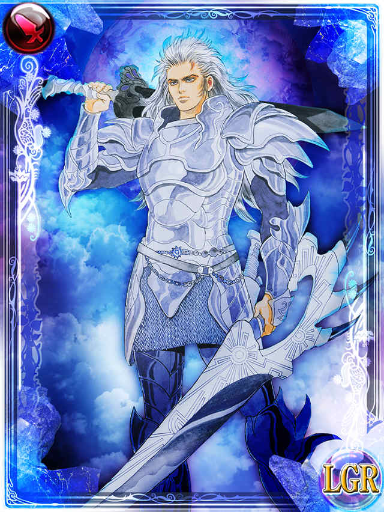

英雄ミルザ
ホーム > ミンサガ index > マルディアスの歴史 > 英雄ミルザ
→古代とBSの歴史からの続き。
伝説の英雄ミルザ
そこに現れたのが、伝説の英雄「銀の戦士」ことミルザです。彼は、サルーインのしもべたちとの戦いの中で成長し、マルディアスの人々から信頼を寄せられる戦士になっていました。エロールは彼にいくつかの試練を課し、彼も見事にそれを果たして神の戦士としての資格を示しました。
彼は、神の手になる武器と鎧を身に着につけ、サルーインと戦い、ついに結界に封じ込めたのです。サルーインは結界の力で地中深く沈んでいき、そこに縛りつけられました。
しかし、ミルザも深手を負って、息絶えます。エロールは彼を天界に引き上げ、正義の神として永遠の命を与えました。
ミルザがサルーインを討伐する話は、詩人がゲーム中、「悪しき三柱神との闘いの語り」と「英雄と神々の最終試練の語り」で語っている内容でもあります。
悪しき三柱神との闘いの語り
英雄と神々の最終試練の語り
「悪しき三柱神との闘いの語り」は、SFC版のロマサガではオープニングで語られていました。

ミルザ（画像はエンサガのもの。こちらから抜粋）
#ロマサガ #ミンサガ #ミンサガリマスター
— 河津秋敏 (@SaGa30kawazu) November 11, 2022
騎士ミルザは孤児だったとも、比較的裕福な家の生まれだったとも言われています。どんな生まれであったにしろ、彼は自分を厳しく律する人間に育ちました。正義を他人に求めるのではなく、自分自身が正しい道を歩む事を求め続けました。
#ロマサガ #ミンサガ #ミンサガリマスター
— 河津秋敏 (@SaGa30kawazu) November 12, 2022
騎士ミルザは多くの人に愛されましたが、同じくらい多くの人に嫌われました。それは彼が正しい事を言うからです。しかし、彼を最も嫌っている人でさえ、最も信頼できる人間は騎士ミルザだと認めていました。ミルザの名声は少しずつ高まっていきます。
#ロマサガ #ミンサガ #ミンサガリマスター
— 河津秋敏 (@SaGa30kawazu) November 13, 2022
騎士オイゲンがミルザとの最初の出会いを語っています。「ミルザは真っ直ぐ過ぎて扱いづらい男だと聞いているが？」と言うとミルザは笑顔で答えた「私も騎士オイゲンは真っ直ぐ過ぎて扱いづらい男だと聞いているよ」。二人の絆はこうして結ばれたと。
#ロマサガ #ミンサガ #ミンサガリマスター
— 河津秋敏 (@SaGa30kawazu) November 14, 2022
騎士が生まれ正義と秩序を目指す人々が活動する一方で、貧富の差が生じ底辺の生活の中で生きる事に必死になるしか無い人々もいました。盗んで騙して奪って、そんな暮らしを続ける娘がいました。その名をアルドラといいます。火を操り恐れられるワルでした。
#ロマサガ #ミンサガ #ミンサガリマスター
— 河津秋敏 (@SaGa30kawazu) November 15, 2022
アルドラとミルザの出会いについては、過剰にロマンティックなものから、本当に素っ気ないものまで様々な話があり、どれが本当なのかは分かりません。オイゲンはアルドラが盗人だったと語っているだけで、細かい話は何も残していないのです。
#ロマサガ #ミンサガ #ミンサガリマスター
— 河津秋敏 (@SaGa30kawazu) November 16, 2022
アルドラとミルザの物語は、また別の形で語ることもあるでしょう。ミルザとその仲間達、ミルザの冒険そのものも一晩では語り尽くせません。彼らの事を語る機会が、いつの日か訪れる事を願っています。しかし今は、ミルザがサルーインを封じた後に進みましょう
→次はオイゲン。
→年表に戻る。